Biomotivate: an interactive patient journey map
Turning a dense, static journey map about substance use recovery into an interactive website for web and mobile.
My role I iteratively designed the screens in Figma, built front-end pieces in HTML, and created a cohesive visual style. I also brought in what I knew from cognitive science, like attention span and how affordances work, to shape both the content and the design.
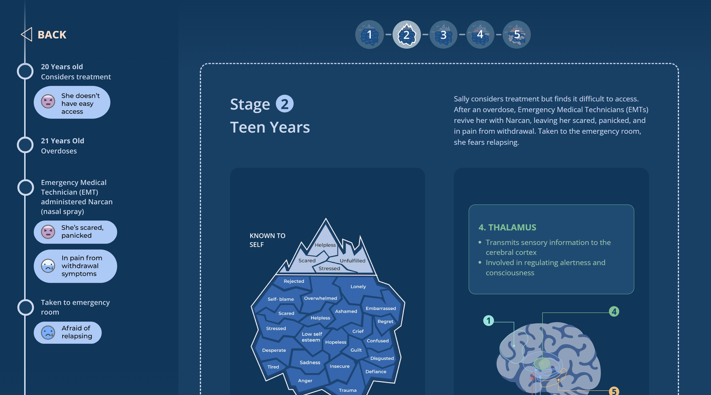
The problem
A previous intern had mapped one patient's journey through substance use disorder and recovery: her emotions, the brain changes behind them, and the events of her life across five stages. The map was rich, but static and dense. Our task was to turn it into an interactive website that works on web and mobile.
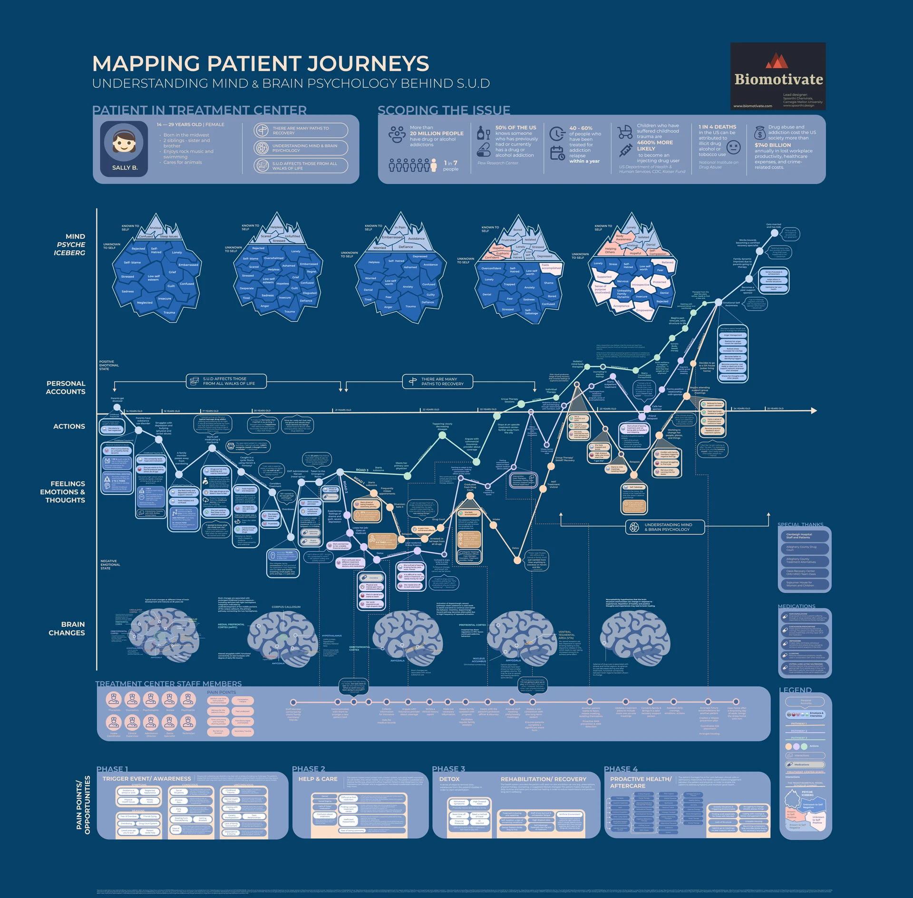
What made it hard
- How do we present a nonlinear story clearly?
- How do we encourage people to explore every path?
- How do we build empathy for people recovering from addiction?
- How do we include all the information without overwhelming people?
Key decisions
A brain you explore, not read
Initially
A static brain diagram with every region and its notes labeled at once. Dense, and hard to follow without a neuroscience background.
What changed
An interactive menu. Click a numbered region to learn what it does and how it changes through addiction and recovery. We kept the original information and added context.
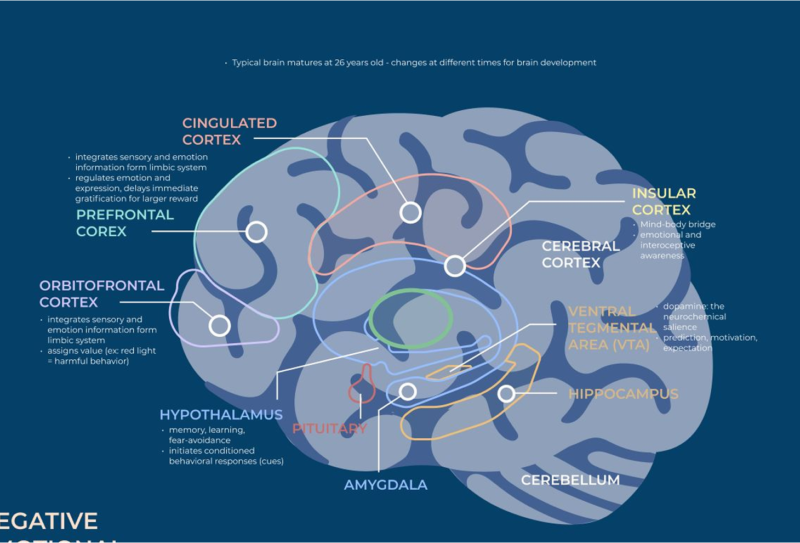
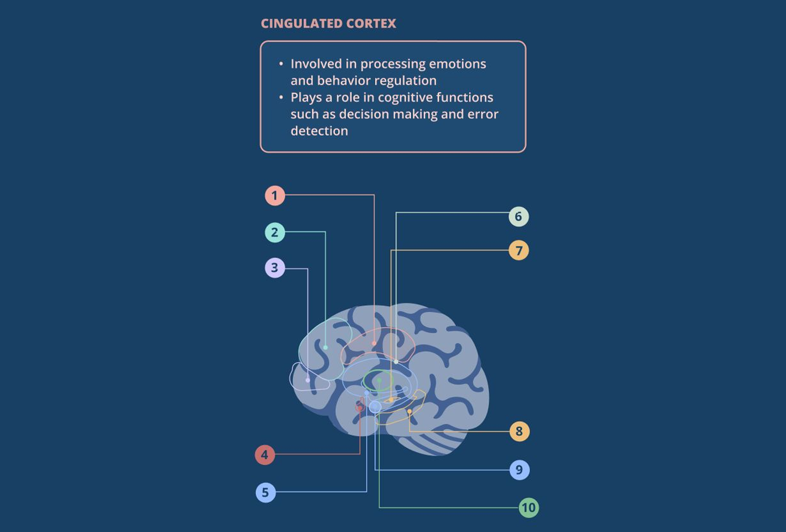
Keeping the emotions in
Initially
Our first timeline dropped Sally's emotions to cut clutter.
What changed
I pushed to bring them back, because the point of the map was empathy. The final timeline shows how Sally felt next to what happened to her.
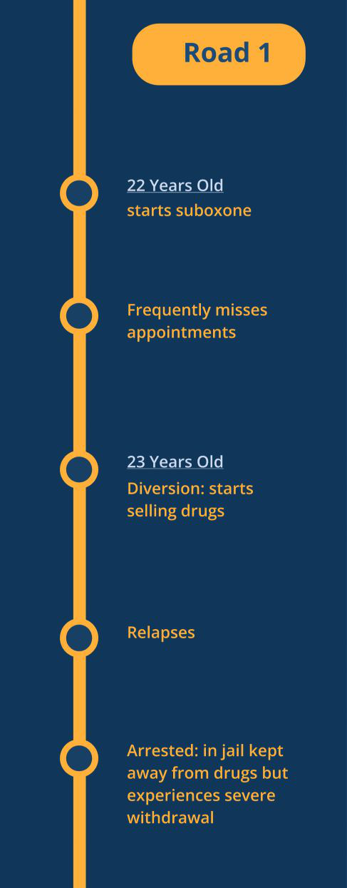
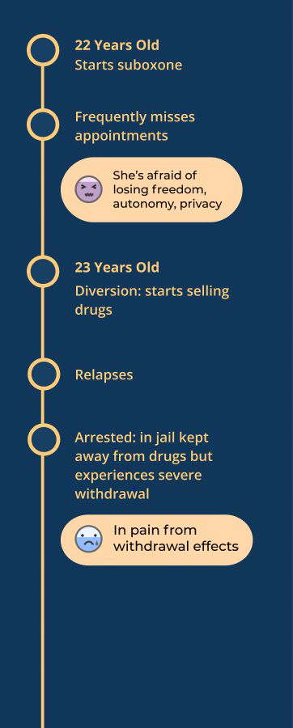
Teaching people how to read the map
Initially
People landed straight in the timeline. In user testing, they were still confused by how much information there was. As the people building it, we hadn't seen that.
What changed
Intro screens that walk people through each part of the map, the emotion iceberg, the brain, and the timeline, before they start.
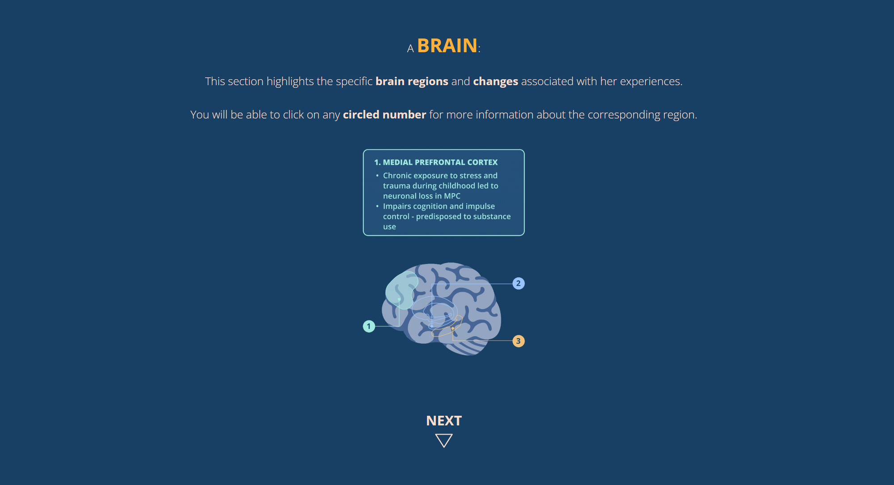
Branching paths that invite exploring
Initially
We tried several branching menus for Sally's three possible roads to recovery. In many, it wasn't clear how to use them or where each road led.
What changed
An animated view that shows the roads are separate, and invites people to explore the others when they reach the branch or the end of a road.
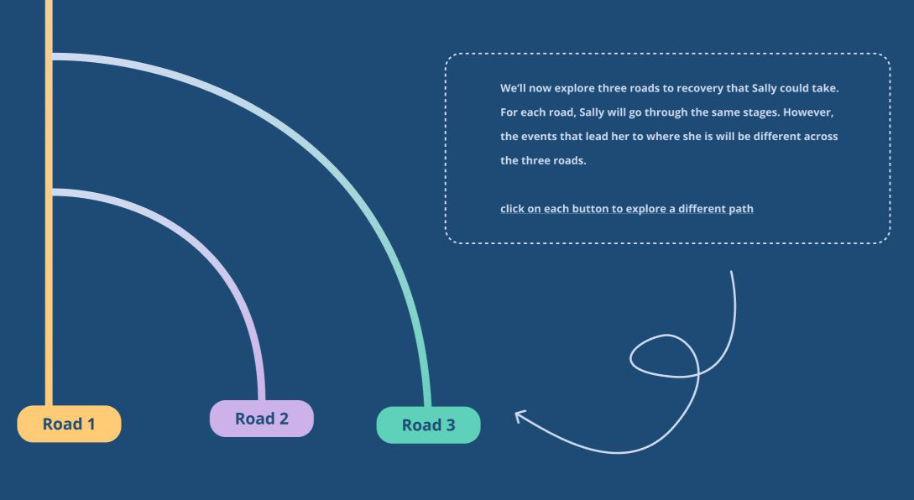
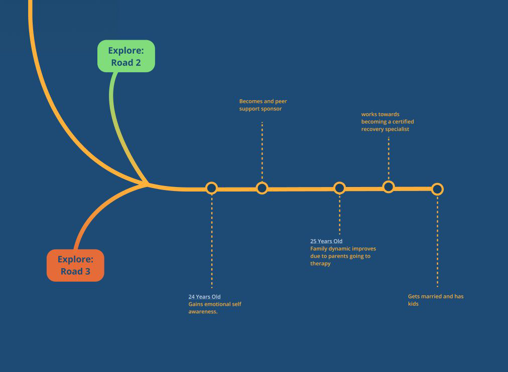
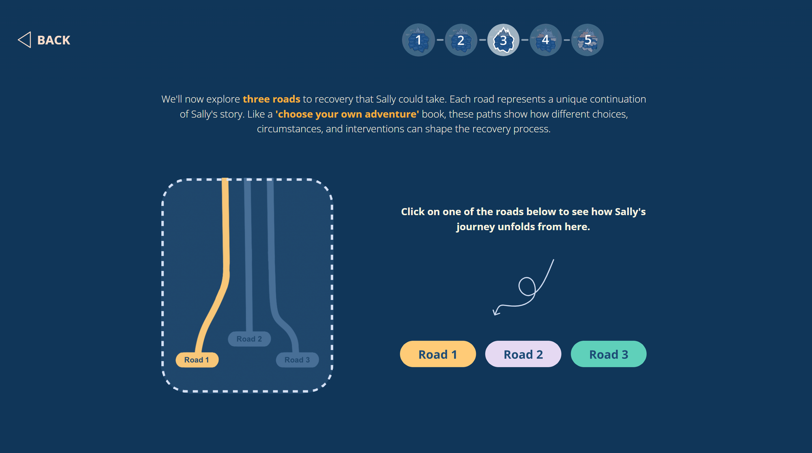
One stage at a time on mobile
Initially
On desktop, the timeline, iceberg, and brain sit side by side. That doesn't fit on a phone.
What changed
The iceberg and brain become part of the timeline, each in its own space. We debated splitting the timeline up, but kept each stage distinct and in order.
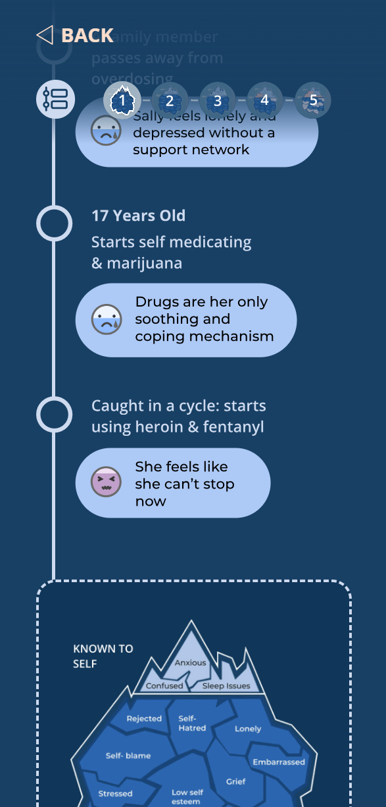
What I'd change
More interactivity on the timeline. For example, hovering over a point could reveal Sally's emotion there, instead of showing every emotion at once.